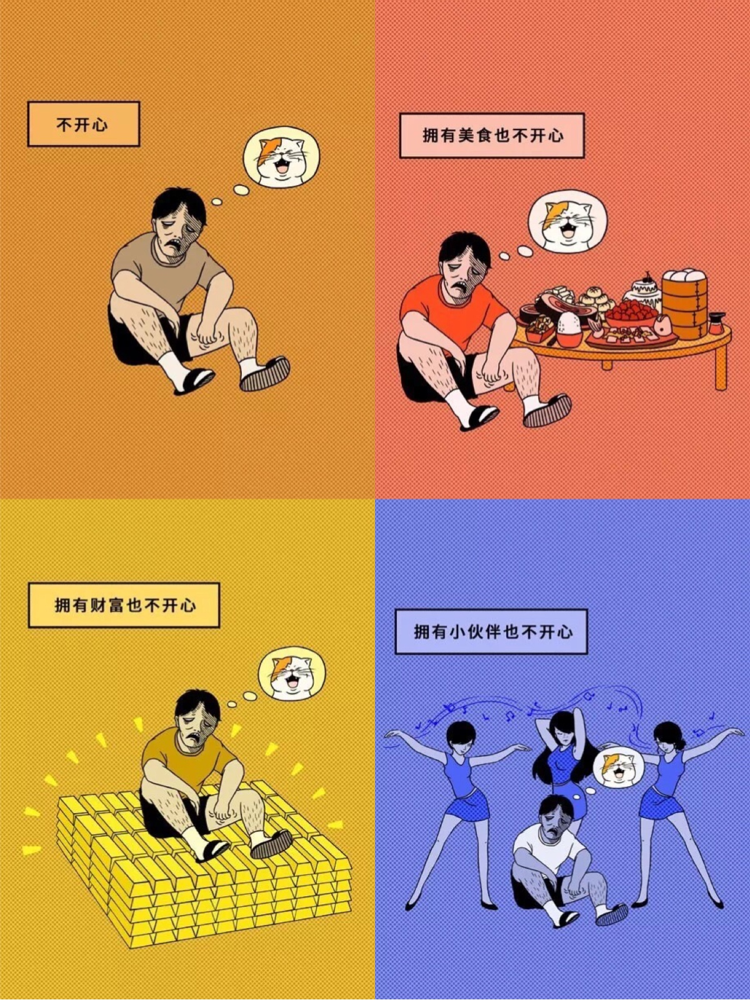
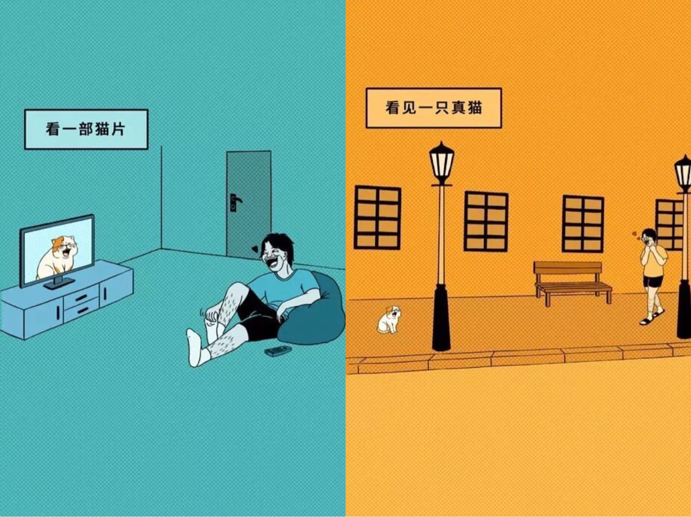
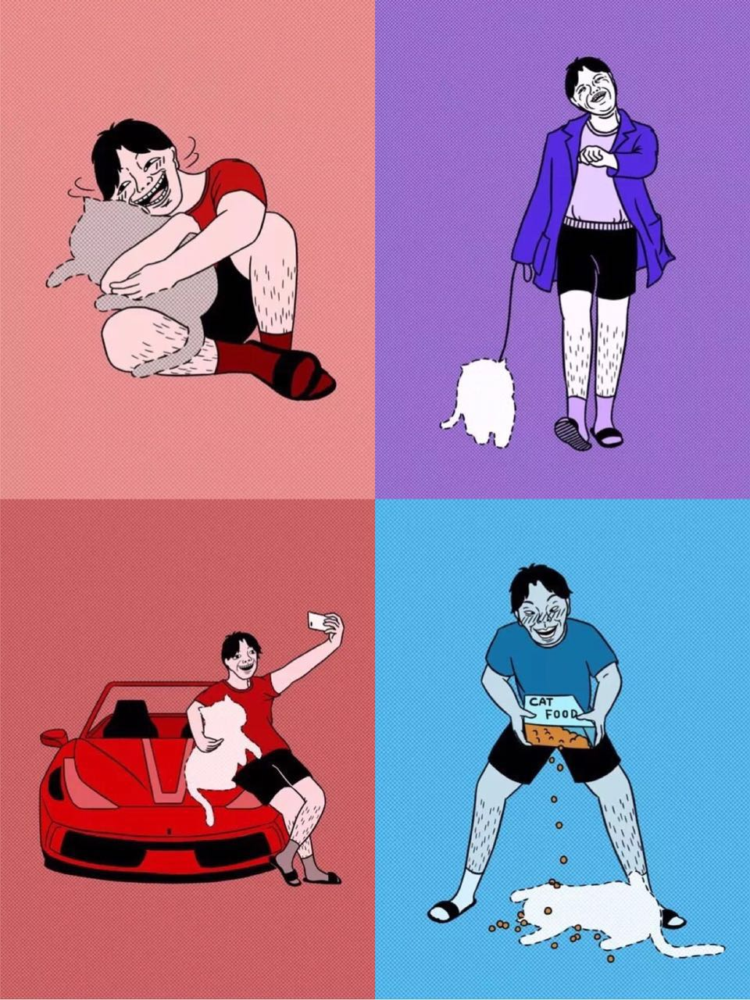
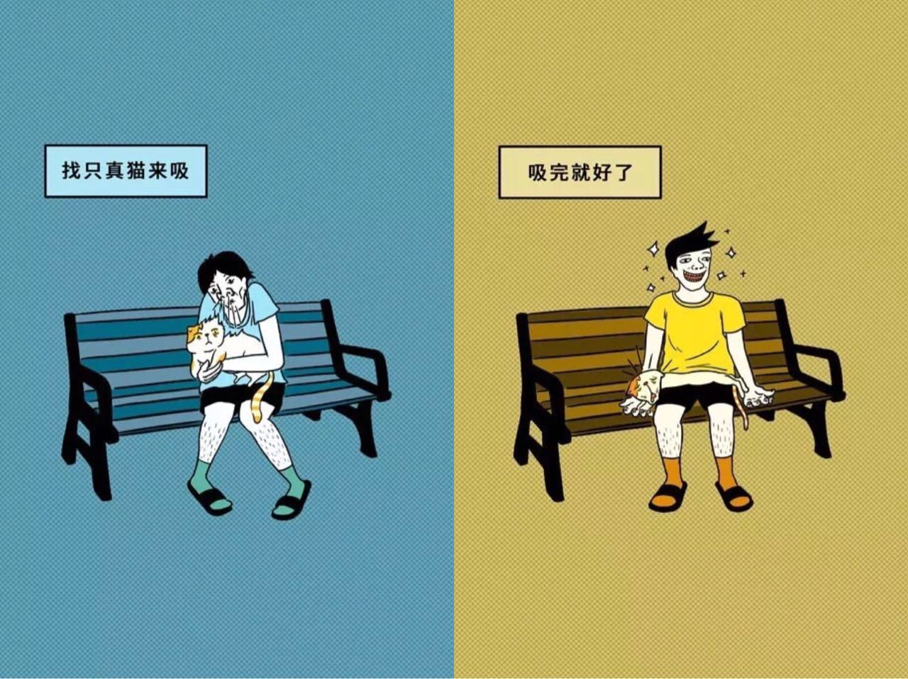
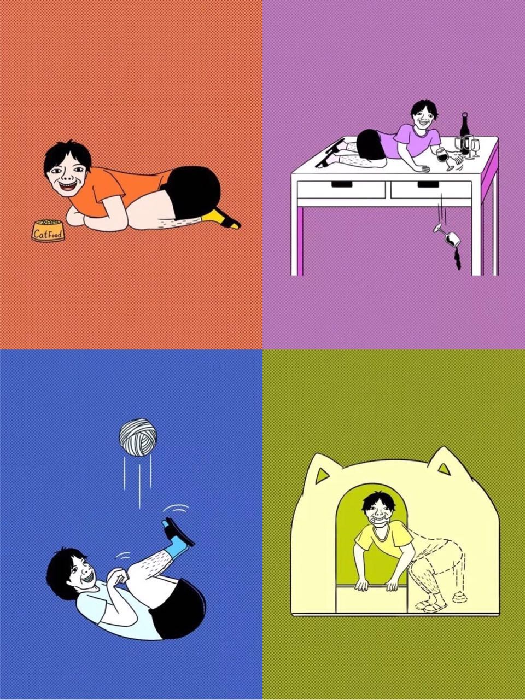
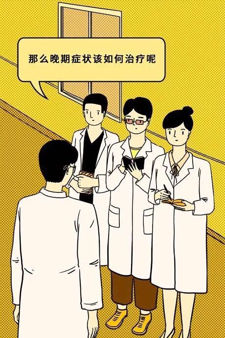
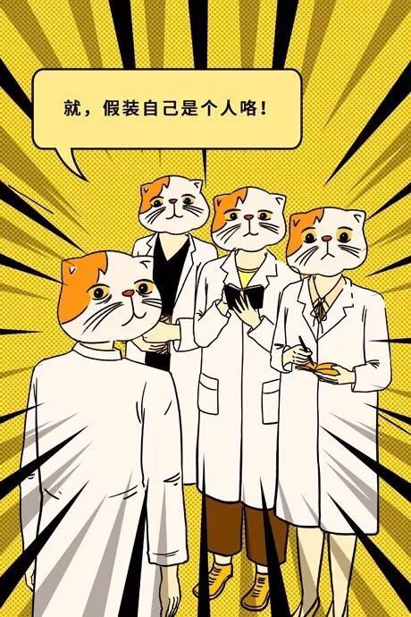

最新研究表明，猫会分泌一种类似荷尔蒙的因子。这种因子让人产生快乐，通过吸猫就能获得。
当然这个因子也有副作用，猫奴如果有一段时间不吸猫，就会患上一种病，叫做后天性失猫综合症，简称：失猫疯。

接下来我们来看看失猫疯具体有哪些症状吧。
初期症状
初期症状：病人沉浸在吸不到猫的痛苦中，无论怎样都感觉不到快乐
这种症状缓解办法比较容易。比如……
 看一部猫片，或看见一只真猫。
中期症状
中期症状：由于极大的痛苦，病人开始出现幻觉，幻想自己有只猫。
 病人幻想自己有只猫.中期症状缓解办法相对简单。比如……
 找只真猫来吸。
晚期症状
晚期症状：病人受到巨大的痛苦，以至于人格分裂，幻想自己是只猫。
 病人幻想自己有只猫. 